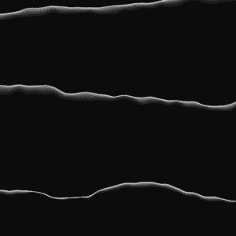
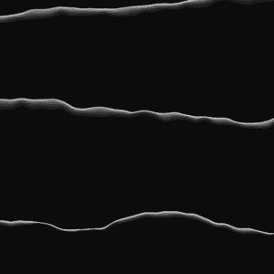
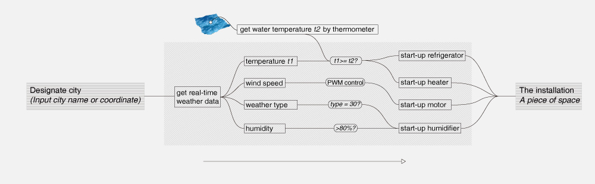
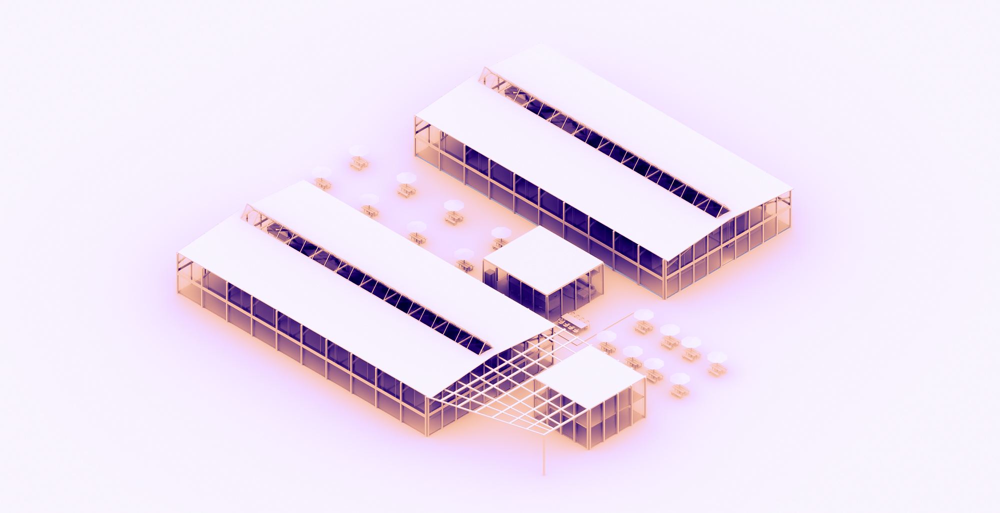
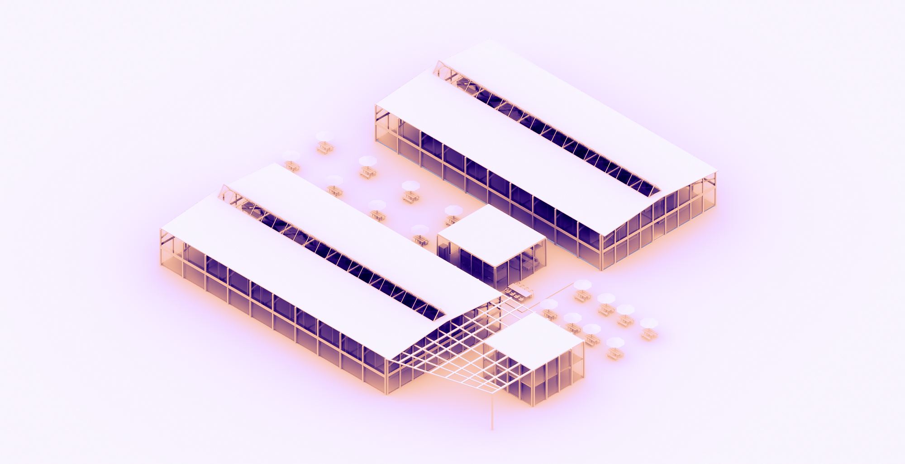
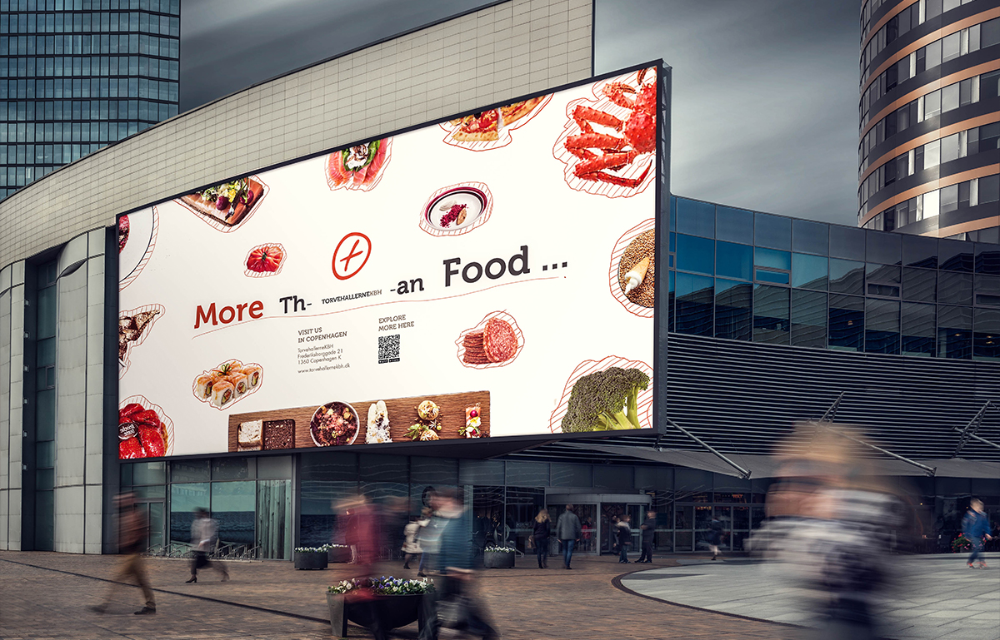
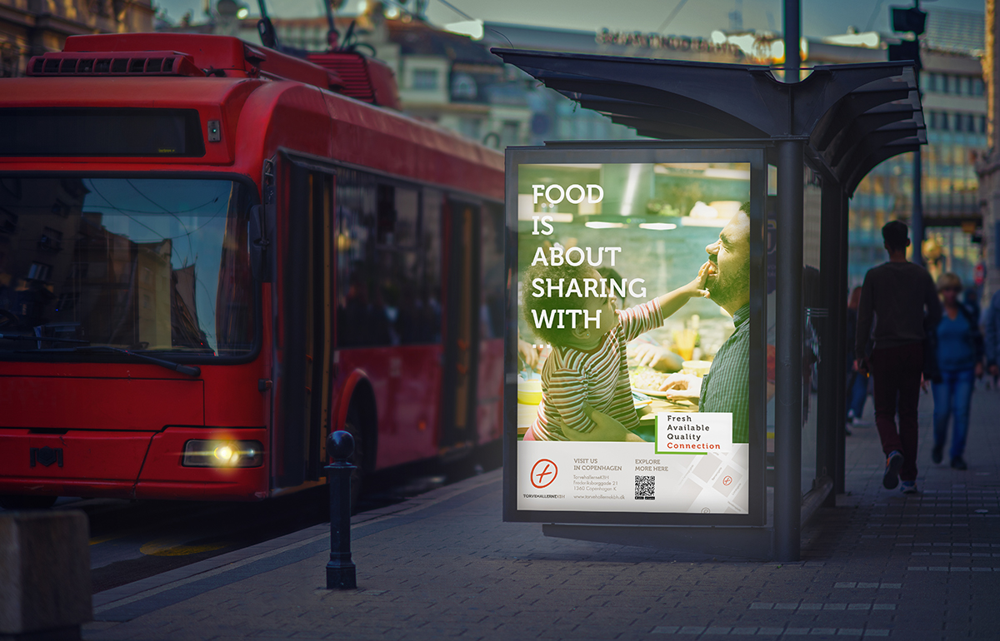
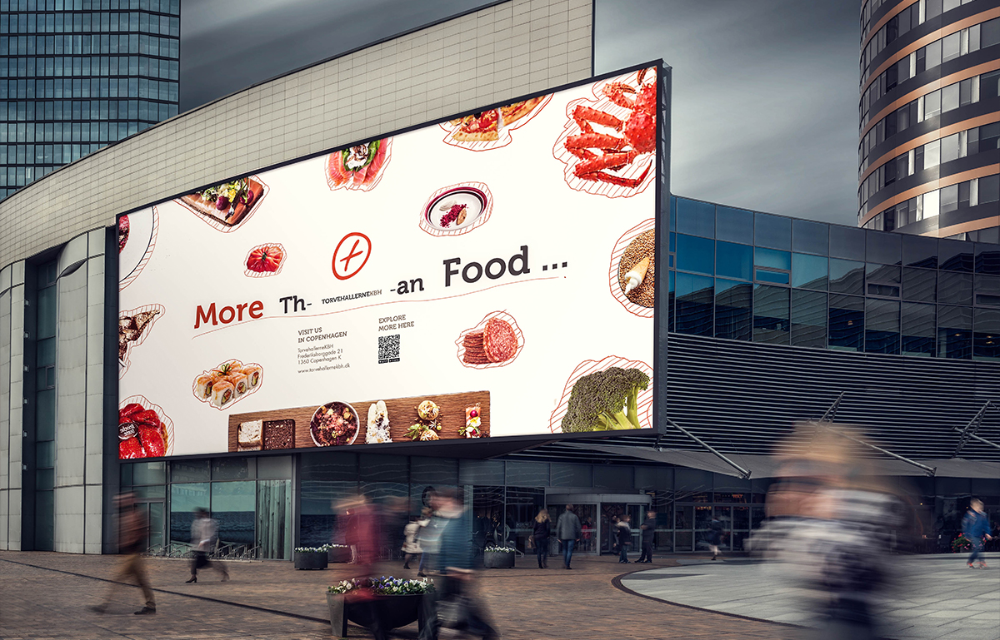
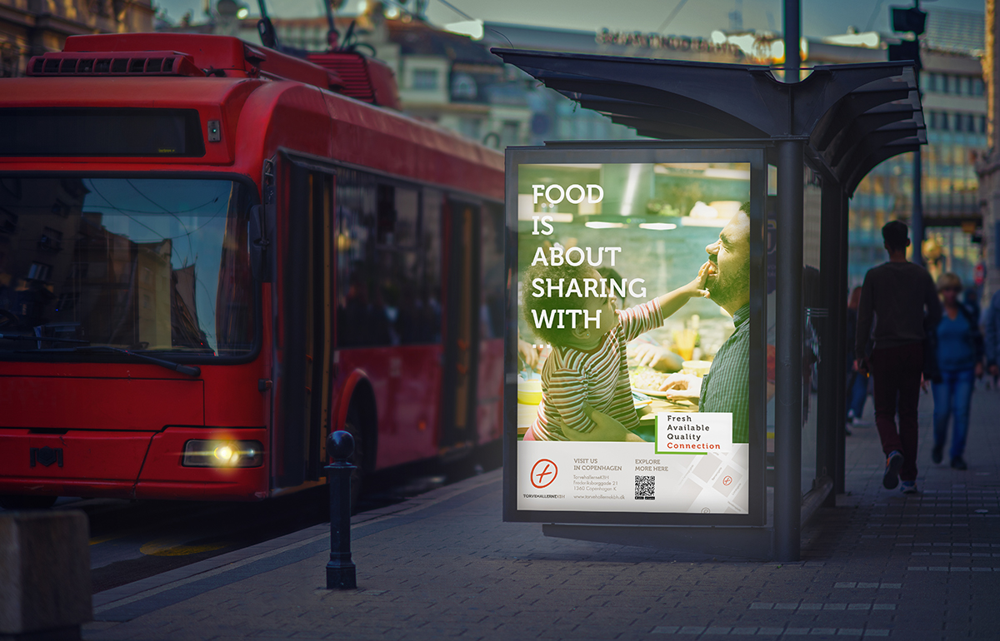

:00, th , China Time
↳ ins hanaruoxili
images|
project1
project2
project3
project4
A piece of space is an installation that achieve 'space transfer’ by altering the state of liquid in it.
By designating any cities on the earth, this installation will alter the state of the liquid within it to transform the state of itself, to be a “part” of the corresponding city, to convey the real-time state of the atmosphere to you.
The most vivid and direct way to sense a city is through its weather. This installation enables us to acquire this: the liquid within it feels cold by hands though it is windless and warm outside When it is windless and warm, and you might see layers of waves as if they were driven by the wind from another space. The sea water within the installation feels cold by hands; it lifts great wave layer upon layer as if it was driven by the wind from another space. By hiding the details of mechanical parts, it enables people to shift between places so that they can achieve a mimic sense of another space in real time.
Taken in Jægersborg Dyrehave last winter, 6pm
There are times when we miss a city, missing its details and people living there. Whenever weather changes, anchoring effect sometimes lingers on me obviously——recalling what I was doing this time last year, the missing sense to that city life and friends enhances.
“Does it become cold there now?”, Sometimes I would check the weather of that city on my cellphone, but it does not relieve the sentiment of missing. The distance itself is still something that cannot be ignored.
The real feeling of being in that city at the same moment is quite precious for me even though it fleets quickly.
Aultar, an alien from planet Zianus, was going to visit the earth. Before his leaving, he took away a piece of place away from his place.
Days after his landing, he stumbled across a mysterious container. As Aultar poured what he brought from his planet into the container, he felt amazed that the surrounding in earth gradually began to change, which shifted into the environment similar to his mother planet. Autar felt so happy and started to appreciate the stars and universe as if he was back to his Zianus.
Tidal statistics collected from China maritime service network.
Left figure: Beilun Port and its tidal statistics since January in 2017.
 

Each wavy line comes from a weekly data of tide from Beilun Port,layers of wavy lines ultimately run together.
The final curve certifies the passing of time on the spot.
Also, each port has its one and only curve, a randomly chose port can be finalized as the installation. People can have their unique model by choosing his/her favourate port
The final one has been improved from the former ones, with more consideration on the hardware volume and layout structure since the mechanical and function-achieving hardware should be concealed.

Models in three versions
Materials that have been experimented with:
○ aluminum plate
○ acrylic plate
○ PVC
○ ABS
Materials that have been adopted finally:
○ aluminum plate
○ high-temperature resistant ABS
○ Silver paint spraying
Reasons:
○ aluminum plate High Conductivity
○ ABS is easier to cut, polish and weld

I have tried two methods to get real-time weather data on the Internet:
❶ Getting real-time weather data by labview
>
Labview Screenshot
❷ Getting real-time weather data by from Xinzhi Weather Github api demos
Supported cities
Both the two methods work. I adopted the latter one since the it parses data all in arduino.
Extract data from Webpage, parse data and extract data from JSON

Main function models including cooling module, heating module, waving module and humidifier module.
1 Ceramic heater band:
to control heating by relays
2 Cooler module: to control cooling by relays
3 Temperature sensors: to monitor the temperature of liquid
4 Atomization chip module: to achieve humidification and atomization
5 Motor module: to control the movement and create waves
6 4 groups of relay modules
7 Bread board
8 Arduino: ESP8266 WIFI module
9 Power module: including electric current of 12V3A, 12V1A as well as 5V.
Technology testing includes the follows:
○ Test of getting weather data
○ The installation and test of cooler
○ Heater band testing
○ Humidifier testing
○ Thermometer testing
○ Water wave testing
Testing results:
○ The capacity required for cooler is pretty large. Normal capacity doesn’t work.
○ Whether the heat can be dissipated will also play a decisive role in the speed of cooling, so I left thermovent at the bottom of the installation.
○ Add water block and use water plus fan to lower the temperature together would improve efficiency. ○ The judgment of relationship between water waves and speed of wind has two solutions:
❶ Control motor speed by PWM
❷ Control motor speed through switching powers by relays
The conversion from wind speed to wind scale takes Beaufor Wind Scale as reference
Two methods:relays and PWM
Dynamic logo | Used Cinema 4D
The dynamic logo is a piece of sea with waves in motion. - Robinson Jeffers
At the same time, it looks like the surface of liquid in installation when you choose a windy city.
It could be recognized from different angles by its blue color and realistic waves.
"The tides are in our veins, we still mirror the stars, life is your child, but there is in me
Older and harder than life and more impartial, the eye that watched before there was an ocean."
第二个菜单对应内容
第三个菜单对应内容

We reached to multiple sources(public media, book, etc.) of information about TH, where the history and the current state of TH were found. Moreover, We contacted with the stakeholders of TH for an overview of it.
Having been to TH as a regular customer for several times, we outlined the accessible public transportation, parking and surrounding entertainment facilities. (including a garden and a fountain nearby). Inside TH, we have tried to simulate multiple circumstances carrying out certain tasks inducing dining, wandering and purchase ingredient with certain purposes.
We observed the customer traffic at TH at different times and recorded their path and time of wandering around. We discovered that nobody would stay at TH for more than 1 hour, and over 50% of the customers come with companions with nearly half bring kids with them.
Through interviews with vendors and customers, we discovered the immense differences among customers in consuming mentality, purposes and habits. While among the customers, Tourists contribute to an unignorable amount. We later defined the customer segmentation in terms of their different needs.
Based on the research results, we classified all the facts and data by relevance and have them visualized in an affinity diagram
No idea of what to choose in facing with multiple choices?
xxx...
Feeling it time consuming to finding specific ingredients for ?
xxx...
No idea of how to cook premium ingredients?
More tourists than estimated
- connection between vendors
- connection between vendor and Torvehallerne
○ No event >>> Foodlab
- connection between customers (locals&tourists | Families)
- connection between professional chefs and customers
 


Recommendation comes in a form of dish recipes. Customers see dish instead of sole ingredient when selecting. All ingredients are from vendors in Torvehallerne.
Add all button is for adding all ingredients needed for the dish to cart.
Customers could either choose delivery or self pick up. Self pick up spot would be near entrance of Torvehallerne Hall 1.
Cooking seats, dining seats and servings are asked to fill in on reservation page. For example, you can order 1 cooking seat, 3 x dining seats and 3 servings if you would like to cook something for your family ...
Map and recommended route are attached to your confirmation letter.


Recommendation comes in a form of dish recipes. Customers see dish instead of sole ingredient when selecting. All ingredients are from vendors in Torvehallerne.
Add all button is for adding all ingredients needed for the dish to cart.
Customers could either choose delivery or self pick up. Self pick up spot would be near entrance of Torvehallerne Hall 1.
Recommendation comes in a form of dish recipes. Customers see dish instead of sole ingredient when selecting. All ingredients are from vendors in Torvehallerne.
Add all button is for adding all ingredients needed for the dish to cart.
Customers could either choose delivery or self pick up. Self pick up spot would be near entrance of Torvehallerne Hall 1.
 



第五个菜单对应内容